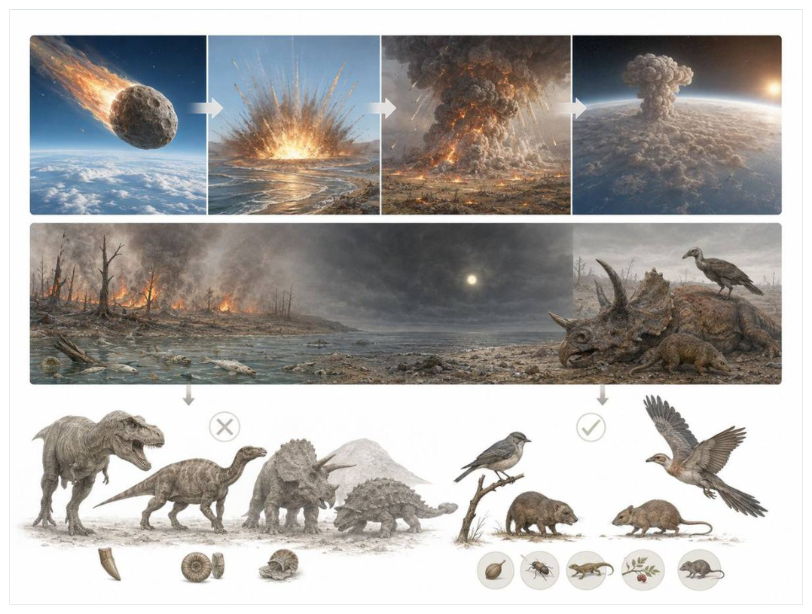
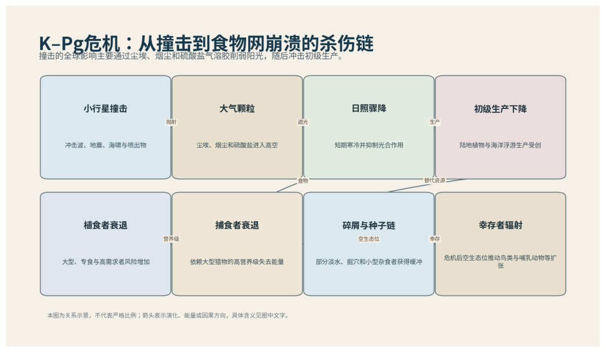

第14篇 · K-Pg：恐龙时代结束 · 第 50 章
希克苏鲁伯撞击：从几小时灾难到多年食物网崩溃
本篇主题:K-Pg：恐龙时代结束
撞击后的黑暗、食物网崩溃与幸存者筛选。

本章科学复原配图 （用于呈现结构与生态关系, 不替代化石照片、测量数据与系统发育证据。）
约6600万年前对应的世界与现代地图和气候都不同。理解它不能从一只明星物种开始，而应从整个系统的限制开始。直径约十公里级的小行星撞击今天墨西哥尤卡坦附近，形成希克苏鲁伯陨石坑。最初几小时产生冲击波、地震、海啸和喷射物再入加热；随后硫酸盐气溶胶、尘埃和烟尘削弱阳光，全球温度和降水剧烈变化。真正造成广泛灭绝的核心，是光合作用和初级生产下降后，陆地与海洋食物网在数月到数年内失去能量入口。
进入这个时代
生态系统的真实声音不是巨兽咆哮，而是持续的摄食、分解、搬运和繁殖。每一具尸体、每一层落叶和每一次沉积扰动都会重新分配资源。边界那一天，附近区域遭受无法想象的热和洪水，远处则先经历天空中的喷射物和火灾。更漫长的杀伤来自暗淡天空：植物停止正常生长，浮游植物产量下降，大型植食者先失去食物，依赖它们的捕食者随后崩溃。能以种子、腐殖质、碎屑或淡水资源维持的小型动物获得相对缓冲。
在“希克苏鲁伯撞击：从几小时灾难到多年食物网崩溃”所覆盖的时间里，不能把地理与气候当作固定背景。海陆位置、海平面、河流或植被结构会改变资源可达性，同一性状在不同地区可能得到完全相反的选择结果。
以希克苏鲁伯撞击：从几小时灾难到多年食物网崩溃为例，物种数量并不等于生态功能。一个群落即使仍有许多物种，只要初级生产、授粉、礁体建造或大型植食等关键功能消失，食物网也会表现为深度崩溃。反过来，少数机会型物种高丰度并不代表系统已经恢复。 在本章中，这一约束具体落在“阳光减少迅速打击陆地植物和海洋浮游生产”这条关系上。
再从约6600万年前的时间尺度看，旧结构被重新利用是宏演化的常见路径。自然选择无法从零绘图，只能修改已有骨骼、膜、基因调控和生活史。后来承担新功能的结构，往往最初因完全不同的局部收益而扩散。 它与“全球铱异常与撞击层”共同决定了后续变化可以沿哪些路径发生。

图 50-1 K-Pg危机的杀伤链从撞击延伸到初级生产和食物网。
生态系统如何运转
把“阳光减少迅速打击陆地植物和海洋浮游生产”放进食物网，可以看到它不是孤立行为。它会影响种群密度、栖息地使用和尸体进入分解链的速度，并把后果传给并未直接参与互动的物种。
围绕“阳光减少迅速打击陆地植物和海洋浮游生产”，还要考虑空间异质性。一项在浅海、河谷或林冠有效的策略，移到深水、干旱内陆或开阔地便可能失去优势。因此同一支系常出现区域性扩张，而不是全球同步取代。 对希克苏鲁伯撞击：从几小时灾难到多年食物网崩溃而言，这一后果还会与“高食物需求的大型专门者难以熬过长期资源断裂”相互放大或抵消。
理解“高食物需求的大型专门者难以熬过长期资源断裂”需要区分个体事件与长期压力。偶然一次捕食只改变个体命运，持续数千代的稳定关系才可能推动牙齿、外壳、感觉器官或生活史发生方向性变化。
围绕“高食物需求的大型专门者难以熬过长期资源断裂”，这一机制也会留下间接证据：咬痕、修复伤、足迹密度、粪化石、牙齿磨损和群落年龄结构分别记录不同环节。只有多种证据方向一致，行为解释才应上调可信度。 对希克苏鲁伯撞击：从几小时灾难到多年食物网崩溃而言，这一后果还会与“碎屑链、种子库和淡水系统提供部分持续能量”相互放大或抵消。
“碎屑链、种子库和淡水系统提供部分持续能量”还会改变可利用空间。一个支系若能进入新的水深、植被高度或沉积层，竞争会暂时减弱；随后追随者、捕食者和寄生者又会把新空间变成新的互动网络。
围绕“碎屑链、种子库和淡水系统提供部分持续能量”，从演化树看，相似关系可能在远亲中反复出现。功能相近不必意味着近缘，而同一祖先结构也可能被后代改作完全不同的用途；生态解释必须与系统发育互相校验。 对希克苏鲁伯撞击：从几小时灾难到多年食物网崩溃而言，这一后果还会与“阳光减少迅速打击陆地植物和海洋浮游生产”相互放大或抵消。
关键演化创新
在“希克苏鲁伯撞击：从几小时灾难到多年食物网崩溃”中，围绕“全球铱异常与撞击层”，讨论“全球铱异常与撞击层”时，最重要的问题是它解除哪一道限制。只要原有身体在运动、摄食、呼吸或繁殖上受约束，能够稍微缓解约束的变异就可能积累，最终产生看似跃迁的结果。 它首先需要在约6600万年前的生态条件下产生可测量收益。
就“全球铱异常与撞击层”而言，化石能较可靠地记录硬组织形态，却很少直接保留基因调控与短时行为。因此结构出现通常可信，最初用途和选择路径则应按证据标为主流解释或合理推测。 本章把它与“撞击冬季和生产力崩溃”并列，是为了显示复杂性状往往依赖多部分协同。
在“希克苏鲁伯撞击：从几小时灾难到多年食物网崩溃”中，围绕“撞击冬季和生产力崩溃”，从共同选择角度看，“撞击冬季和生产力崩溃”可能先服务旧功能，后来才参与今天最熟悉的用途。把最终功能倒推成起源原因，会把演化误写成有目的的工程。 它首先需要在约6600万年前的生态条件下产生可测量收益。
就“撞击冬季和生产力崩溃”而言，其宏观影响往往滞后于结构起源。一个创新可以先在小型、稀少支系中存在数百万年，直到环境变化或竞争者灭绝后才迅速扩张；“出现”和“成为主导”是两个不同事件。 本章把它与“陆海选择性灭绝”并列，是为了显示复杂性状往往依赖多部分协同。
在“希克苏鲁伯撞击：从几小时灾难到多年食物网崩溃”中，围绕“陆海选择性灭绝”，讨论“陆海选择性灭绝”时，最重要的问题是它解除哪一道限制。只要原有身体在运动、摄食、呼吸或繁殖上受约束，能够稍微缓解约束的变异就可能积累，最终产生看似跃迁的结果。 它首先需要在约6600万年前的生态条件下产生可测量收益。
就“陆海选择性灭绝”而言，这也提醒我们不要寻找单一关键基因。复杂性状由多个组织和调控网络协调，改变任何一环都可能产生不同结果，演化路径因此呈树状而非直线。 本章把它与“全球铱异常与撞击层”并列，是为了显示复杂性状往往依赖多部分协同。
生命群像：把物种放回生态网络
菊石（Ammonoidea）
菊石（Ammonoidea）存在于泥盆纪至白垩纪末。现有材料显示其大小约壳径从厘米到两米以上，生态位置接近海洋游泳捕食、食腐或浮游摄食者。复杂隔壁和快速演化使其成为重要生物地层化石让它成为理解本章主题的合适案例，但不意味着同一类群所有成员都采用相同策略。
对菊石而言，相似环境可能让远亲出现相近轮廓，但内部结构会保留祖先限制。比较它与现代类比时，应只借用可检验的功能，不把现代动物的行为、社会制度或代谢水平整套复制到古生物身上。 这使“复杂隔壁和快速演化使其成为重要生物地层化石”不能脱离其海洋游泳捕食、食腐或浮游摄食者角色来理解。
现有认识建立在K-Pg彻底灭绝，幼体依赖浮游食物可能增加风险；不同生态型选择性仍研究中之上。古生物学的可信度不是来自一件戏剧化标本，而是来自多件标本、多个地点和不同方法得到相容结果。新发现若改变比例或分类，并非此前研究毫无价值，而是证据边界被重新画清。
由菊石这个案例看，从生态尺度看，它与本章其他成员共同维持一张网络。任何“最强”排名都会遗漏资源供应、幼体死亡、疾病和气候脉冲；真正决定长期成功的是种群能否在波动中不断完成繁殖。 它在泥盆纪至白垩纪末留下的记录，因此同时是第50章所讨论的形态史和生态史的一部分。
厚头龙（Pachycephalosaurus wyomingensis）
在晚白垩世末，厚头龙（Pachycephalosaurus wyomingensis）以约约4至5米的身体参与食物网。它不是孤立的“明星生物”，而是北美植食或杂食恐龙；厚颅顶和头部装饰可能用于种内竞争或展示决定它能利用哪些资源，也决定必须承担哪些成本。
对厚头龙而言，它既可能是捕食者、植食者或工程者，也同时是其他生物的猎物、竞争者和分解资源。一次取食只是一瞬，长期生态影响来自成千上万个体反复搬运营养、改变植被或扰动沉积物。体型越大，这种工程效应通常越明显，但恢复速度也常越慢。 这使“厚颅顶和头部装饰可能用于种内竞争或展示”不能脱离其北美植食或杂食恐龙角色来理解。
支持该解释的材料包括病理与力学支持撞击可能性，但具体行为姿势和物种成长阶段仍有争论。若不同证据出现冲突，应优先报告范围而不是强行给出单值。例如体长会随参照类群变化，运动能力会随软组织假设变化，系统位置也会随新增性状重新计算。
由厚头龙这个案例看，它也展示专门化的双面性：结构在稳定环境中提高效率，却可能在气候、食物或竞争格局突变时限制转向。灭绝不是对设计的道德评分，而是性状、地理范围和偶然事件相遇后的历史结果。 它在晚白垩世末留下的记录，因此同时是第50章所讨论的形态史和生态史的一部分。
地狱溪小型鸟（Asteriornis maastrichtensis）
认识地狱溪小型鸟（Asteriornis maastrichtensis）要先放弃静态骨架印象。它生活在白垩纪末，接近6600万年前，约约鸽子大小，日常任务是作为近水岸活动的现代鸟类近亲维持能量与繁殖。兼具鸡雁类相关头骨特征，表明冠群鸟在撞击前已分化只是这一整套生活史中最容易化石化的部分。
对地狱溪小型鸟而言，成年体型往往主导复原，但幼体可能使用完全不同的食物和栖息地。若成长阶段跨越多个生态位，种群就同时依赖多套环境；其中任一环节中断都可能导致长期衰退。化石骨床的年龄结构因此比单具最大标本更能说明生态。这使“兼具鸡雁类相关头骨特征，表明冠群鸟在撞击前已分化”不能脱离其近水岸活动的现代鸟类近亲角色来理解。
我们之所以能够作出上述判断，主要因为单个精细头骨限定最低时间，具体生态由肢骨和环境推断。单一结构通常有多种功能解释，所以还要查看磨损、病理、肌肉附着、沉积环境和近缘比较。计算模型能排除不可能姿势，却不能自动恢复没有保存的软组织。
由地狱溪小型鸟这个案例看，面对仍有争议的细节，负责任的复原不是停止讲述，而是标注证据等级。形态、年代和亲缘可较确定，具体姿势、叫声、求偶和群猎则按材料降级；新标本会在这些边界内继续改写认识。 它在白垩纪末，接近6600万年前留下的记录，因此同时是第50章所讨论的形态史和生态史的一部分。
阿拉莫龙（Alamosaurus sanjuanensis）
阿拉莫龙（Alamosaurus sanjuanensis）生活在晚白垩世末，已知体型约为巨型数十吨级。它在群落中的角色可概括为北美南部大型植食者。最值得观察的结构是证明非鸟恐龙直到边界前仍具有巨大体型和多样生态。这些结构不是为了后来时代而准备，而是在当时直接影响摄食、运动、防御或繁殖。
对阿拉莫龙而言，这种生活方式还会反向塑造环境。摄食改变植物或猎物结构，足迹和掘穴改变沉积，尸体和排泄物把营养集中到局部。生态位不是它进入的固定房间，而是它与其他生物共同建造并持续修改的关系网络。 这使“证明非鸟恐龙直到边界前仍具有巨大体型和多样生态”不能脱离其北美南部大型植食者角色来理解。
其复原依赖地层年代需精确区分是否真正接近边界，灭绝没有长期渐退到只剩少数衰败种。年代和保存形态通常属于较强证据，体重、速度、颜色和社会行为则需要额外假设。书中把这些层次拆开，是为了让读者知道哪些可视为事实，哪些仍应等待更多材料。
由阿拉莫龙这个案例看，它不是祖先链条上必须跨过的一格。演化树中同时存在许多近缘支系，只有少数留下后代；旁支化石同样关键，因为它们显示某组性状出现的顺序和可行范围。 它在晚白垩世末留下的记录，因此同时是第50章所讨论的形态史和生态史的一部分。
撞击层蕨类孢子峰（fern spike）
在这一章的生命群像里，撞击层蕨类孢子峰（fern spike）不能只当作图鉴名称。它出现于K-Pg边界后短期，体型大约微米级孢子，主要生活方式是受扰动陆地的先锋植物信号；孢粉层中蕨类比例突然上升，显示森林破坏后先锋群落扩张则说明身体怎样围绕这一生活方式进行组合。
对撞击层蕨类孢子峰而言，相似环境可能让远亲出现相近轮廓，但内部结构会保留祖先限制。比较它与现代类比时，应只借用可检验的功能，不把现代动物的行为、社会制度或代谢水平整套复制到古生物身上。 这使“孢粉层中蕨类比例突然上升，显示森林破坏后先锋群落扩张”不能脱离其受扰动陆地的先锋植物信号角色来理解。
科学家并未直接看见它生活，依据是不同地区峰值强度和持续时间不同，不能直接等同全球同一种蕨。现代类比可以帮助提出可检验模型，却不能取代化石；越具体的短时行为，越需要痕迹、内容物或重复病理等直接线索。
由撞击层蕨类孢子峰这个案例看，这个案例还提醒我们，亲缘和生态角色是两件事。近亲可以因资源分化而外形迥异，远亲也能因相似压力而趋同。把它放在演化树和食物网两个坐标中，才不会误写成线性进步。 它在K-Pg边界后短期留下的记录，因此同时是第50章所讨论的形态史和生态史的一部分。
因果链：环境、生态与性状
种群层面的成功还要考虑波动，而不仅是平均状态。在资源丰富年份，“撞击冬季和生产力崩溃”带来的高性能可能迅速增加个体数；在低谷年份，维持该结构的成本又会放大死亡。若厚头龙拥有较广食谱或可迁移，便可能跨过低谷；若其厚颅顶和头部装饰可能用于种内竞争或展示高度依赖单一环境，恢复就更困难。化石群落中的丰度峰值、体型变化和地理收缩能为这种“繁荣—压力—恢复”循环提供线索，但必须与采样偏差区分。对约6600万年前的任何稳态描述，都只是长期波动中被岩层保存的一小段。
本章的因果链最终落在繁殖上。“高食物需求的大型专门者难以熬过长期资源断裂”改变个体获得资源和避开风险的方式，“全球铱异常与撞击层”改变身体能做什么，但只有这些差异持续影响配子、胚胎、幼体和成体留下后代的概率，演化频率才会跨世代变化。菊石和厚头龙的化石常让人关注尺寸或武器，然而巢、蛋、芽孢、孢粉、幼体壳和成长线往往更接近选择真正发生的位置。理解希克苏鲁伯撞击：从几小时灾难到多年食物网崩溃，因此要把最壮观的成年结构重新接回完整生活史。
把“全球铱异常与撞击层”拆成成本与收益，可以避免把演化创新写成无条件升级。它可能扩大摄食、运动或繁殖的边界，却要付出组织材料、发育协调和日常维持的代价；“撞击冬季和生产力崩溃”又会改变这笔账在不同生命阶段的分配。对菊石而言，复杂隔壁和快速演化使其成为重要生物地层化石在成年阶段或许十分醒目，但种群能否延续仍取决于幼体是否能找到食物、是否有安全的生长场所以及环境波动后是否保留繁殖者。化石往往偏爱成年硬组织，因此书写约6600万年前时必须主动补上这些不易保存却决定长期命运的环节。
从时间顺序看，“全球铱异常与撞击层”的最早记录不等于它立即改写生态系统。结构可能先以小幅变异出现在稀少支系中，经历很长的试验期，直到“阳光减少迅速打击陆地植物和海洋浮游生产”所代表的资源条件或竞争格局改变，才出现可见的辐射。反过来，一个支系在化石记录中突然繁盛，也不证明关键结构刚刚产生；保存窗口打开、地理扩散或生态位释放都能造成类似图景。因此讨论约6600万年前的创新时，本章把“首次出现”“功能完善”“多样化”和“成为生态主导”分成四个问题，避免用一个日期替代整段历史。
在约6600万年前，身体不是若干部件的简单相加。“全球铱异常与撞击层”只有与“陆海选择性灭绝”在供能、控制和发育上兼容，才可能稳定遗传；局部性能提高若超过呼吸、循环或支撑能力，整体反而失效。地狱溪小型鸟的兼具鸡雁类相关头骨特征，表明冠群鸟在撞击前已分化因此应放进完整身体比例中解释，而不是把某一器官单独夸大。生物力学模型可以估算受力和运动范围，组织学能限制生长速度，近缘比较能提示同源关系；三者相互校验，才有可能从静态化石走向一个能够活着完成日常活动的动物或植物。
时代横截面：个体、种群与证据
证据强度也应逐句区分。全球边界黏土中的铱、冲击石英与玻璃微球若直接记录形态或行为痕迹，可把某些可能性排除；陨石坑钻芯和高精度定年若来自模型或现代类比，则通常提供范围而非唯一答案。对地狱溪小型鸟的兼具鸡雁类相关头骨特征，表明冠群鸟在撞击前已分化，我们也许能高可信地描述结构，却只能以主流解释讨论功能，以合理推测讨论日常行为。把层级写出来不会削弱故事，反而让读者知道未来新发现最可能改动哪一部分。
把结构看作模块，可以解释为什么过渡类型常显得“新旧并存”。菊石的复杂隔壁和快速演化使其成为重要生物地层化石可能已经接近后来状态，而呼吸、繁殖或运动的其他部分仍保留祖征；厚头龙可能采用另一种组合达到相似功能。演化不要求所有部件同步改变，只要求每个阶段的完整个体能够生活和繁殖。正因如此，真实谱系会产生旁支、回退和多次独立试验，而不是教科书式直梯。
再把地狱溪小型鸟加入横截面，群落关系会从两者比较变成网络。它作为近水岸活动的现代鸟类近亲，通过兼具鸡雁类相关头骨特征，表明冠群鸟在撞击前已分化连接资源与其他消费者；其数量变化可能同时影响菊石和厚头龙，甚至改变分解链和营养循环。这样的间接效应很少能由一具骨架直接证明，却可以从物种共现、丰度、痕迹化石和环境指标中受到约束。希克苏鲁伯撞击：从几小时灾难到多年食物网崩溃的生态复原因此需要群落数据，而不只是著名标本的精细解剖。
地理同样会拆散看似整齐的时代标签。约6600万年前并不是全球同时拥有同一种气候与群落：海盆深浅、纬度、山脉、河流和大陆隔离会让菊石、厚头龙与地狱溪小型鸟的分布错开。一个支系可能在某地区衰退、在另一地区成为避难所；后来扩散又会造成化石记录中的“重新出现”。因此本章的代表物种用于说明机制，而不意味着它们都在同一地点同一时刻相遇。
“谁取代了谁”常把复杂过程压成单线叙事。在希克苏鲁伯撞击：从几小时灾难到多年食物网崩溃中，即使厚头龙在某层位后减少、地狱溪小型鸟随后增加，也可能是二者分别响应气候或栖息地，而不是直接竞争导致淘汰。需要检查时间误差、地理重叠和资源相似度；只有三者都支持，替代关系才更可信。更多时候，生态系统通过功能重新组合过渡，旧支系与新支系会长期并存。
科学家为什么这样判断
“全球边界黏土中的铱、冲击石英与玻璃微球”提供的是一类约束而非完整录像。它可能精确记录某一瞬间，却未必代表全年或整个物种；也可能反映长期平均，却无法指出单次行为。把不同时间尺度的证据组合，才能重建生态过程。
“陨石坑钻芯和高精度定年”还需要与年代学绑定。只有事件先后关系可靠，才能讨论因果；若环境变化和生物响应的误差范围大量重叠，就应表述为相关或可能机制，而不是宣布已经证明。
“孢粉、浮游有孔虫与食物网模型重建恢复”最有价值的地方，是它能排除某些流行复原。关节不允许的姿势、承重无法支持的速度、与沉积环境冲突的生活方式，都可以被证据淘汰；剩余模型仍可能不止一个。
在“希克苏鲁伯撞击：从几小时灾难到多年食物网崩溃”这一问题上，把上述方法合在一起，研究者才能从残缺材料走向受约束的复原。任何一条证据都可能受到成岩、污染、样本量或现代类比的限制；结论越具体，越需要多条独立证据指向同一方向，并与约6600万年前的地层背景相容。
过去的图景与今天的证据
德干火山在撞击前后也释放大量熔岩和气体，可能已经造成气候压力，并在灭绝后影响恢复。主流证据把撞击视为K-Pg突然大灭绝的主要触发，但火山与撞击的相对作用仍需按时间尺度区分。全球野火是否覆盖整个地球、撞击冬季持续多久，也随模型输入变化。
围绕“希克苏鲁伯撞击：从几小时灾难到多年食物网崩溃”，需要特别警惕新闻标题把“可能”“支持”改写成“已经证明”。古生物学很少能直接观察行为，越接近颜色、叫声、群居和捕猎策略，越应说明样本数量与替代解释。
对约6600万年前的材料而言，争议持续还因为不同问题需要不同尺度。个体生物力学、种群生态和全球气候模型无法互相替代；一个模型能解释骨骼受力，不等于已经解释整个支系为何扩张或灭绝。
跨尺度观察
微生物底盘：宏体生态依赖微生物完成分解、固氮和碳硫循环。即使章节聚焦巨型动物，尸体最终仍由微生物和小型分解者处理；大灭绝后的恢复也往往先表现为生产和分解网络重建，而非大型动物立即回归。 在“希克苏鲁伯撞击：从几小时灾难到多年食物网崩溃”中，这一尺度具体连接了“阳光减少迅速打击陆地植物和海洋浮游生产”与“全球铱异常与撞击层”，因而不能只从单个成年标本判断。
尺度错觉：百万年足以让微小遗传差异累积成巨大的身体变化，数万年的快速事件又可在地质记录中近似一条细线。把深时间压缩会制造“突然出现”的错觉，因此正文同时报告持续时间和证据分辨率。 在“希克苏鲁伯撞击：从几小时灾难到多年食物网崩溃”中，这一尺度具体连接了“高食物需求的大型专门者难以熬过长期资源断裂”与“撞击冬季和生产力崩溃”，因而不能只从单个成年标本判断。
能量账本：任何大型身体、快速运动或高代谢都必须由初级生产支撑。食物从生产者进入消费者时会损失大量能量，因此顶级捕食者种群必然远少于猎物。环境变化若先削弱生产端，高营养级通常最早出现繁殖失败；这比单次搏斗更能决定支系命运。在“希克苏鲁伯撞击：从几小时灾难到多年食物网崩溃”中，这一尺度具体连接了“碎屑链、种子库和淡水系统提供部分持续能量”与“陆海选择性灭绝”，因而不能只从单个成年标本判断。
通向下一个时代
从本章走向下一阶段时，需要保留的不是一串物种名，而是一个因果链：环境改变可用能量与栖息地，生态关系筛选性状，性状又反过来改造环境。边界之后，非鸟恐龙、翼龙、菊石和大型海洋爬行动物消失；鸟、哺乳动物、鳄、龟、两栖类和许多鱼类中只有部分支系穿过。幸存不是随机，也没有一个万能特征。
本章精选来源
- [R80] Alvarez, L. W. et al. Extraterrestrial cause for the Cretaceous-Tertiary extinction. Science 208, 1095-1108 (1980).
- [R81] Schulte, P. et al. The Chicxulub asteroid impact and mass extinction at the Cretaceous-Paleogene boundary. Science 327, 1214-1218 (2010).
- [R82] Gulick, S. P. S. et al. The first day of the Cenozoic. Proceedings of the National Academy of Sciences 116, 19342-19351 (2019).
- [R83] Chiarenza, A. A. et al. Asteroid impact, not volcanism, caused the end-Cretaceous dinosaur extinction. Proceedings of the National Academy of Sciences 117, 17084-17093 (2020).
- [R84] Hull, P. M. et al. On impact and volcanism across the Cretaceous-Paleogene boundary. Science 367, 266-272 (2020).